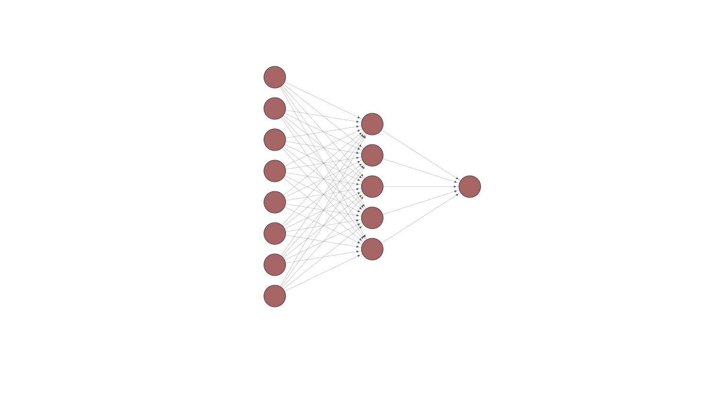

A primer on Generative AI
What do we need to know?
05 Apr 2024
What is AI?
The Evolution of AI
(2020)
(Nov 2022)
(Mar 2023)
(Mar 2024)
Read more at Oxford Shorthand Stories - AI: A History
What we call AI today
…is “just” a subset of a much broader field called Machine Learning within the broader field of Artificial Intelligence.
The Two Phases
- Training Phase
- Deployment Phase
1) Training Phase
- Expose algorithm to massive datasets
- Define a way to evaluate the algorithm (loss function) Whenever this type of input is given, this should be the expected output.
- Tweak the algorithm (automatically) until it maps inputs to outputs correctly
1) Training Phase (cont.)
üí° Don‚Äôt think of AI as a ‚Äòbrain‚Äô, think of it as a bunch of knobs and dials.
- When training an AI, you are tuning these parameters or weights of the algorithm
- The more data you have, the better the algorithm will be
- The more complex the problem, the more parameters you need
ChatGPT 3 is reported to have 175 billion parameters
2) Deployment Phase
- Once the training is done, the parameters üéõÔ∏è are frozen
- We call the trained weights a model
- We can run new data through the model to get an output (we call this inference or prediction)
- The model produces an output according to the fixed parameters
ML Engineers must be able to tune the model
How do Large Language Models (LLMs) work?
- There are thousands of different Machine Learning algorithms, all trained in a similar way as described above.
- A popular type of algorithm is called a Neural Network.
- They are the building blocks of Large Language Models (LLMs).
Neural Networks: The Building Blocks
- Initially inspired by how neurons work in brains
- Composed of layers of neurons
- Each connection has a weight
- Information flows forward ⏩
- Learning happens by adjusting weights (üéõÔ∏è the knobs and dials mentioned earlier)
- Complex patterns emerge from simple units

Visual Example: Learning Decision Boundaries
From Colours to Words: Token Prediction

- A typical LLM predicts the next token (word/subword)
- Each token in the vocabulary has a probability distribution
- The model chooses based on context
- Temperature controls randomness
- The process repeats for each new token
The Transformer Architecture

- Revolutionary architecture from 2017
- Powers all modern LLMs
- Key innovation: Attention mechanism
- Allows model to focus on relevant parts of input
- Creates connections between distant words
- Processes entire sequences at once
- Scales efficiently to massive datasets
Source: The Transformer Architecture: The Attention Mechanism (technical)
Transformer Capabilities
- Transformers can be adapted to many different tasks, not just next-text prediction
- Speech recognition
- Machine Translation ⭐
- Multi-modal tasks (text, image, audio)
- For a while, the more models grew, the better they performed
- But we might be reaching a point of diminishing returns
- New architectures are being developed to improve performance
What to expect of the future?
Expect more powerful image and video generation models
Expect advances and privacy/security issues of AI agents (LLMs that can perform tasks autonomously)
OECD report from 2023 predicts that 18-27% of high-level cognitive tasks will be automated by technologies like AI by 2030. The nature of knowledge work will definitely change.
Many in Silicon Valley believe AGI (Artificial General Intelligence) will be achieved soon, in the next few decades, some claim it’s almost here.
- Critics like Prof. Gary Marcus strongly disagree.
What does this mean for education in general?
- AI has already changed how learners/students interact with content
- Whether we like AI or not, we have to address it in our teaching (even if just to critique it).
The GENIAL project
Thank You
Dr Jon Cardoso-Silva
Assistant Professor (Education) in Data Science
LSE Data Science Institute
j.cardoso-silva@lse.ac.uk
lse-dsi.github.io/genial
Read more about the The GENIAL project:
LSE+KCL AI and Language Learning and Teaching workshop